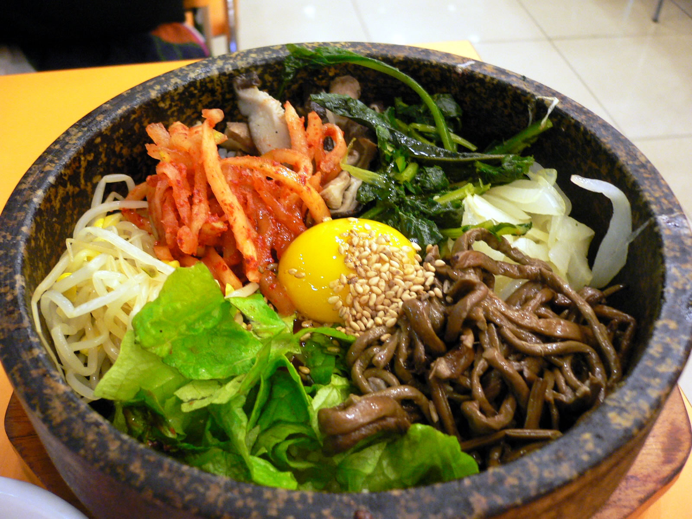

Food
Korean cuisine has evolved through centuries of social and political change. Originating from ancient agricultural and nomadic traditions in the Korean peninsulaand southern Manchuria, Korean cuisine has evolved through a complex interaction of the natural environment and different cultural trends.
Korean foods can be largely categorized into groups of "main staple foods" (주식), "subsidiary dishes" (부식), and "dessert" (후식). The main dishes are made from grains such as bap (a bowl of rice), juk (porridge), and guksu (noodles).
Korean cuisine is largely based on rice, vegetables, and meats. Traditional Korean meals are noted for the number of side dishes (반찬; banchan) that accompany steam-cooked short-grain rice. Kimchi is served at nearly every meal. Commonly used ingredients include sesame oil, doenjang (fermented bean paste), soy sauce, salt, garlic, ginger, pepper flakes, gochujang (fermented red chili paste) and napa cabbage.
Ingredients and dishes vary by province. Many regional dishes have become national, and dishes that were once regional have proliferated in different variations across the country. Korean royal court cuisine once brought all of the unique regional specialties together for the royal family. Foods are regulated by Korean cultural etiquette.
Many Korean banchan rely on fermentation for flavor and preservation, resulting in a tangy, salty, and spicy taste. Certain regions are especially associated with some dishes (for example, the city of Jeonju with bibimbap) either as a place of origin or for a famous regional variety. Restaurants will often use these famous names on their signs or menus (i.e. "Suwon galbi").
Drink

All Korean traditional nonalcoholic beverages are referred to as eumcheong or eumcheongnyu (음청류 飮淸類) which literally means "clear beverages”. According to historical documents regarding Korean cuisine, 193 items of eumcheongnyu are recorded.[59] Eumcheongnyu can be divided into the following categories: tea, hwachae(fruit punch), sikhye (sweet rice drink), sujeonggwa (persimmon punch), tang (탕, boiled water), jang (장, fermented grain juice with a sour taste), suksu (숙수, beverage made of herbs), galsu (갈수, drink made of fruit extract, and Oriental medicine), honeyed water, juice and milk by their ingredient materials and preparation methods. Among the varieties, tea, hwachae, sikhye, and sujeonggwa are still widely favored and consumed; however, the others almost disappeared by the end of the 20th century.
While soju is the best known liquor, there are well over 100 different alcoholic beverages, such as beers, rice and fruit wines, and liquors produced in South Korea as well as a sweet rice drink. The top-selling domestic beers (the Korean term for beer being maekju) are lagers, which differ from Western beers in that they are brewed from rice, rather than barley. Consequently, Korean beers are lighter, sweeter and have less head than their Western counterparts. The South Korean beer market is dominated by the two major breweries: Hiteand OB. Taedonggang is a North Korean beer produced at a brewery based in Pyongyang since 2002. Microbrewery beers and bars are growing in popularity after 2002.